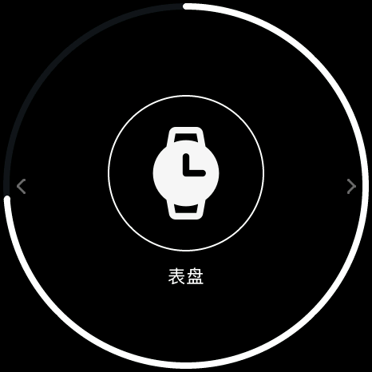
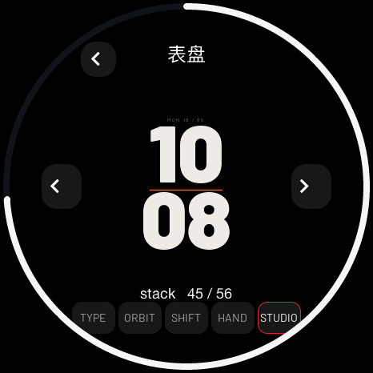

<!doctype html><html lang="zh-CN"><meta charset="utf-8"><meta name="viewport" content="width=1080"><title>表盘入口与图标</title><link rel="stylesheet" href="style.css">
    <main class="poster picker" data-number="9"><header><div class="brand">soRound OS <span>明天 · 正式版见</span></div><div class="kicker">08 / 更顺手的入口</div><h1>喜欢哪一款，<br>直接换。</h1><p class="sub">表盘有了独立入口，实心图标也重新整理了一遍。</p></header><div class="content"><div class="duo"><figure class=""><figcaption>独立表盘入口</figcaption></figure><figure class=""><figcaption>分类与实时预览</figcaption></figure></div><div class="icon-grid"><figure class=""><figcaption>天气</figcaption></figure><figure class=""><figcaption>方块</figcaption></figure><figure class=""><figcaption>遥控台</figcaption></figure><figure class=""><figcaption>木鱼</figcaption></figure></div><p class="caption">原设置入口保留 · 即选即存 · 中文 / English</p></div><footer><span>原生 UI 渲染 · 画面数值为示例</span><span>09 / 10.23</span></footer></main></html>